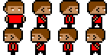
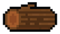
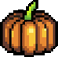
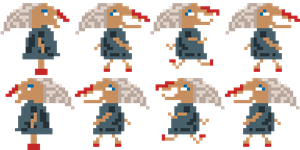
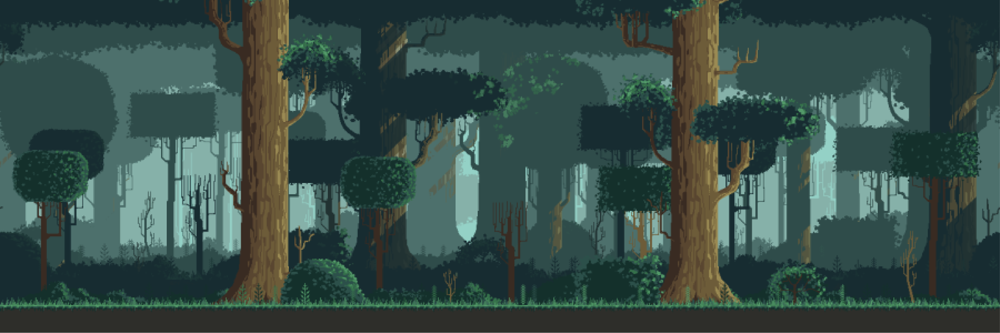

<<!DOCTYPE html>
    <html>

    <head>
        <meta charset="utf-8">
        <title>Arreganhadentes Escape</title>
        <meta name="Arreganhadentes Escape" content="width=device-width, initial-scale=1.0">
        <style>
            @import url('https://fonts.googleapis.com/css2?family=Jacquard+12&display=swap');

            :root {
                --gradiente: linear-gradient(45deg, #0f1921, #314054);

            }

            #recursos {
                display: none;
            }

            body,
            html {
                margin: 0;
                padding: 0;
                height: 100%;
                display: flex;
                justify-content: center;
                align-items: center;
            }

            .color {
                background: var(--gradiente);
            }

            canvas {
                border: 5px solid #F88379;
                border-radius: 10px;
            }
        </style>
        <script src="Ludoteca.js"></script>
        <script>
            var tela;
            var contexto;
            var continua;
            var contador;
            var fundo;
            //...

            var player;
            var som;
            var erro;
            var chao;
            var bruxa;
            var time;
            var tempo1 = localStorage.getItem("tempo");
            console.log(tempo1);
            var tempo_2;
            var final;

            var cenario;
            var obstaculos;

            var pausa;
            var pausatxt;
            var pausado;
            var preto;
            var continuarbtn;
            var fim;
            var novoX;

            var tempo;
            var cronometro;
            var cronometro_2;
            var distanciaExtra = 900;

            function inicia() {
                tela = new Tela(document.getElementById("tela"));
                contexto = tela.contexto;
                continua = true;
                contador = 0;

                fundo = new Imagem(0, 0, document.getElementById("fundo"));
                fundo.deltaX = -2;

                fundo2 = new Imagem(fundo.largura, 0, document.getElementById("fundo")); // Inicializa a segunda imagem de fundo
                fundo2.deltaX = -2;

                //...
                erro = new Som(document.getElementById("erro"));
                som = new Som(document.getElementById("som"));
                som.volume = 0.5;
                cronometro = new Cronometro();
                tempo = new Texto(tela.largura * 0.83, 20, "T: " + cronometro.tempoDecorrido, '#674b3b');
                tempo.tamanho = 32;

                function tempofinal() {
                    cronometro_2 = new Cronometro();
                    console.log(cronometro_2.tempoActual);
                    final = Math.floor((cronometro_2.tempoActual - tempo1) / 60000);
                    console.log(final);
                }
                tempofinal();
                tempo_2 = new Texto(tela.largura * 0.3, 450, "Demoraste: " + final + " minutos!", 'white');
                tempo_2.fonte = "jacquard";
                tempo_2.tamanho = 32;

                preto = new Rectangulo(0, 0, tela.largura, tela.altura, "black");
                preto.opacidade = 0.5;
                fim = new Texto(500, 160, "Vitória!", "yellow");

                b = new Texto(575, 380, "Continua", "white");;
                bf = new Rectangulo(575, 380, 155, 35, "#674b3b", 0, 0);
                bf.opacidade = 0;


                obstaculos = new Array();
                obstaculos.push(new Imagem(0, 0, document.getElementById("tronco1")));
                obstaculos.push(new Imagem(800, tela.altura * 0.69, document.getElementById("tronco2")));
                obstaculos.push(new Imagem(800, tela.altura * 0.69, document.getElementById("tronco3")));
                obstaculos.push(new Imagem(800, tela.altura * 0.8, document.getElementById("pedra1")));
                obstaculos.push(new Imagem(800, tela.altura * 0.8, document.getElementById("pedra2")));
                obstaculos.push(new Imagem(800, tela.altura * 0.69, document.getElementById("pedra3")));

                for (var i = 0; i < obstaculos.length; i++) {
                    obstaculos[i].deltaX = -3;
                    obstaculos[i].x = (i * distanciaExtra) + ((i + 5) * (tela.largura / (obstaculos.length))) - obstaculos[i].largura / 4;
                    obstaculos[i].y = tela.altura * 0.93 - obstaculos[i].altura; // altura do chão menos a altura do obstáculo para que ele apareça em cima do chão
                }


                bruxa = new ImagemAnimada(tela.largura * 0.1, tela.altura * 0.82, document.getElementById("bruxa"), 4, 8, 2);
                bruxa.animado = true;


                player = new ImagemAnimada(tela.largura * 0.4, tela.altura * 0.82, document.getElementById("player"), 4, 8, 2);
                player.animado = true;
                player.gravidade = 20;
                player.deltaGravidade = -4;
                player.salto = false;

                chao = new Rectangulo(0, 660, tela.largura, 400, "#674b3b");
                chao.visivel = false;

                //...
                tela.processaClique = processaClique;
                tela.processaRatoDescido = processaRatoDescido;
                tela.processaRatoSubido = processaRatoSubido;
                tela.processaRatoMovido = processaRatoMovido;
                tela.processaTeclaDescida = processaTeclaDescida;
                tela.processaTeclaSubida = processaTeclaSubida;
            }

            function desenha() {
                contexto.clearRect(0, 0, tela.largura, tela.altura);
                fundo.desenha(tela);
                fundo2.desenha(tela);
                player.desenha(tela);
                bruxa.desenha(tela);
                chao.desenha(tela);


                fundo.x += fundo.deltaX;
                fundo2.x += fundo2.deltaX; // Atualiza a posição da segunda imagem de fundo

                if (fundo.x <= -fundo.largura) {
                    fundo.x = fundo2.x + fundo.largura; // Move a primeira imagem de fundo para a direita se ela saiu completamente da tela
                }

                if (fundo2.x <= -fundo2.largura) {
                    fundo2.x = fundo.x + fundo.largura; // Move a segunda imagem de fundo para a direita se ela saiu completamente da tela
                }
                if (player.colide(chao, true)) {
                    player.salto = true;
                }

                for (var i = 0; i < obstaculos.length; i++) {
                    obstaculos[i].desenha(tela);
                    obstaculos[i].x += obstaculos[i].deltaX;
                    if (obstaculos[i].x + obstaculos[i].largura < 0) {
                        obstaculos[i].x = (tela.largura + 5 * tela.largura - obstaculos[i].largura) + distanciaExtra;
                        obstaculos[i].y = tela.altura * 0.93 - obstaculos[i].altura;
                    }


                    if (contador % 2 == 0) { // reduzir o número de verificação de colisões para metade -- não deve fazer diferença e alivia o processador
                        if (obstaculos[i].colide(player)) {
                            continua = false;
                            erro.reproduz();
                            setTimeout(function () {
                                inicia();
                                desenha();
                            }, 500);
                        }
                    }
                }

                if (player.colide(bruxa, true)) {
                    continua = false;
                }
                //...

                bruxa.desenha(tela);
                tempo.texto = (45 - Math.floor(cronometro.tempoDecorrido / 10) / 100).toFixed(2);
                tempo.fonte = "jacquard";
                tempo.desenha(tela);


                //...
                if (continua) {
                    contador++;
                    if (cronometro.tempoDecorrido > 45000) {
                        fim.tamanho = 128;
                        fim.fonte = "jacquard";
                        fim.x = tela.largura * 0.5 - fim.largura * 0.5;
                        fim.y = tela.largura * 0.5 - tela.altura * 0.6;
                        b.tamanho = 40;
                        b.fonte = "jacquard";
                        b.x = tela.largura * 0.5 - b.largura * 0.5;
                        b.y = tela.largura * 0.5 - tela.altura * 0.3;
                        bf.x = tela.largura * 0.5 - b.largura * 0.5;
                        bf.y = tela.largura * 0.5 - tela.altura * 0.3;


                        continua = false;
                        preto.desenha(tela);
                        fim.desenha(tela);
                        b.desenha(tela);
                        bf.desenha(tela);
                        continuarbtn.desenha(tela);
                        tempo_2.desenha(tela);
                        tempofinal();
                    }
                    else {
                        window.requestAnimationFrame(desenha);
                        // 0.5 segundos 
                    }
                }

            }

            function tempofinal() {
                cronometro_2 = new Cronometro();
                console.log(cronometro_2.tempoActual);
                final = cronometro_2.tempoActual - tempo1;
                console.log(final);
            }


            function pausaJogo() {
                pausado = true;
                continua = false;
                console.log("pausado");
            }

            function retomaJogo() {
                pausado = false;
                continua = true;
                console.log("cont");
                window.requestAnimationFrame(desenha);
            }

            function processaClique() {
                // usar as propriedades tela.ratoX e tela.ratoY, referentes às coordenadas do rato
                //...

            }

            function processaRatoDescido() {
                if (bf.contemPonto(tela.ratoX, tela.ratoY)) {
                window.location.href = "index.html";
            }
            }

            function processaRatoSubido() {
                // usar as propriedades tela.ratoX e tela.ratoY, referentes às coordenadas do rato
                //...
            }

            function processaRatoMovido() {
                // usar as propriedades tela.ratoX e tela.ratoY, referentes às coordenadas do rato
                //...
            }

            function processaTeclaDescida() {
                // usar a propriedade tela.codigoTecla, referente à tecla usada pelo utilizador
                if (tela.codigoTecla == "Space") {        // barra de espaços
                    //...
                    if (player.salto) {
                        player.animado = true;
                        player.inverteGravidade();
                        player.salto = false;
                        var jump = new Som(document.getElementById("pulo"));
                        jump.reproduz();
                    }
                }
                if (tela.codigoTecla == "ArrowLeft") {    // esquerda
                    //...

                }
                if (tela.codigoTecla == "ArrowUp") {      // cima
                    //...
                }
                if (tela.codigoTecla == "ArrowRight") {   // direita
                    //...

                }
                if (tela.codigoTecla == "ArrowDown") {    // baixo
                    //...
                }
                if (event.key == 'p' || event.key === 'P') {  // Pausa
                    if (pausa) {
                        // Se o jogo estiver pausado, retome o jogo
                        retomaJogo();
                        pausa = false;
                        continua = true;

                    } else {
                        // Se o jogo não estiver pausado, pause o jogo
                        pausaJogo();
                        pausa = true;
                        continua = false;

                    }
                }
            }

            function processaTeclaSubida() {
                // usar a propriedade tela.codigoTecla, referente à tecla usada pelo utilizador
                if (tela.codigoTecla == "Space") {
                    //...
                }
                if ((tela.codigoTecla == "ArrowLeft") || (tela.codigoTecla == "ArrowRight")) {
                    //...

                }
                if ((tela.codigoTecla == "ArrowUp") || (tela.codigoTecla == "ArrowDown")) {
                    //...
                }
            }

            window.onload = function () {
                inicia();
                desenha();
            }
        </script>
    </head>

    <body class="color">
        <canvas id="tela" width="1280" height="720">O seu <em>browser</em> não suporta o elemento</canvas>
        <div id="recursos">
            <!-- ... -->
            <audio id="erro" src="recursos/erro.mp3"></audio>
            <audio id="som" src="recursos/Powerup.mp3" autoplay></audio>
            
            
            
            
            
            
            
            
            
            
            
            
        </div>
    </body>

    </html>